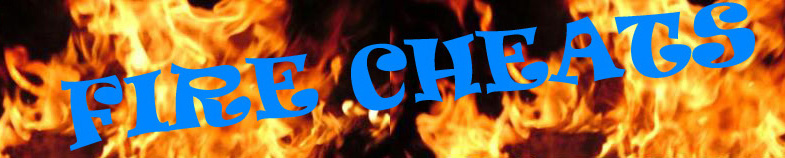
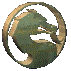

|  | ||||||
|
Plataformas
|
 O que é um Cheat?
O termo cheat traduz-se para a língua portuguesa como trapaça ou batota, embora nem sempre um cheat seja trapaça, podendo algumas vezes ser requerido para que algum segredo do jogo seja exibido. Terminologia O termo é utilizado como gíria por gamers para designar códigos e truques especiais durante o jogo. Pelo fato destes geralmente resultarem em habilidades que beneficiam o jogador ou exibirem revelações do segredo do jogo, são por vezes considerados como trapaça. Assim, um cheater, usuário de cheats, pode ser considerado um trapaceiro.Tipos de Cheat Os cheats criados pelas próprias empresas fabricantes do jogo, para proporcionar aos avaliadores do jogo caminhos mais rápidos. Geralmente os cheats são ativados através de um código ou uma sequência de botões (no caso de videogames). Existem alguns tipos de cheating:
Criando um Cheat Para modificar valores e parâmetros em jogos e outros aplicativos, é necessário a utilização de um software especial. O Cheat-O-Matic / O Trapaceador, é um Software universal para cheats, compatível com praticamente qualquer jogo ou programa que rode em Windows.Descrição: Cheat ´O Matic é um software para trapaças - cheat em inglês - que permite modificar valores e parâmetros em jogos e outros aplicativos.Funciona de modo semelhante a aparelhos como Game Genie, Game Shark e Action Replay, e pode ser usado para aumentar (ou diminuir) a quantidade de itens, ouro, dinheiro, etc. Popular entre os jogadores do Brasfoot 2010 Em português, onde pode ser usado para aumentar a quantia de dinheiro disponível em caixa, aumentar a força de jogadores, sua quantidade de gols, alterar o resultado de partidas, pontuação e muito mais. Roda em Windows 95, 98, 2000, Millenium e XP. Download: FONTE: Site Superdownloads
|
|||||